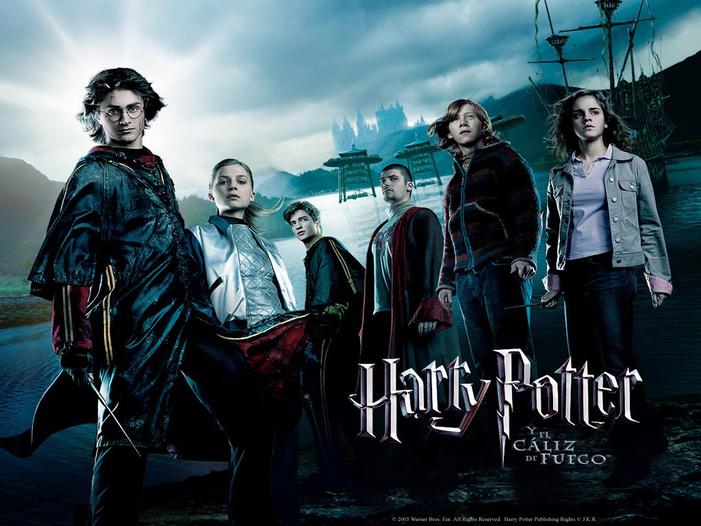

Harry Potter y el caliz de fuego
La cuarta entrega cinematografica de Harry Potter dirigida por Mike Newell que fue estrenada en 2005 nos muestra un notable crecimiento de Harry y sus compañeros. Se encuentran en esa edad crítica en la que están a un paso de alcanzar la madurez. La adolescencia entra en su máximo esplendor, y con ella las dudas, las inseguridades y los traumas que ella acarrea, un caldo de cultivo para que puedan colarse por las rendijas de la inmadurez los resquicios del mal. Comienzan los primeros amagos de enamoramiento, los bailes de fin de curso, los tonteos involuntarios. Y, mientras, la oscuridad acecha a la vuelta de la esquina. Fantasía oscura, aventura iniciática, elementos góticos, barroquismo visual. Así es esta cuarta parte de Harry Potter, con sus virtudes y sus defectos, con su elenco de actores británicos impresionante y sus siempre alargadísimos metrajes que terminan extenuando al espectador.
